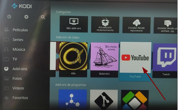
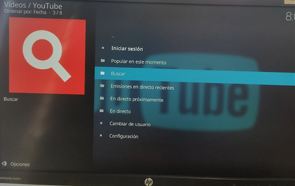
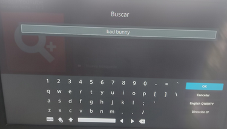
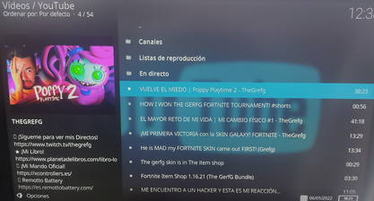

Nos dirigimos al apartad addons en el menu principal y seleccionamos youtube

Te apareceran diferentes opciones y seleccionars la que desees, en este caso seleccionamos buscar

Aparecera una ventana, en ella introducimos lo que queramos buscar y pulsamos enter

Despues de buscar nos apareceran diferentes opciones de videos, pulsas en la que quieras ver y el video se reproducirá